Lecture 8 — YOLO Loss Functions (across versions)
Slides © Dr. Khaled M. ElSayed, Zewail City. 39 slides.
Quick review — YOLO at a glance (slides 1–16)
The YOLO pipeline in one paragraph
Why it matters: every term in the loss function is just a regression target on one of the entries of the YOLO output vector. If the encoding isn't clear, the loss formula will look like nonsense.
YOLO ("You Only Look Once") divides the input image into an $S\times S$ grid of cells. Each cell is responsible for predicting any object whose centre falls inside it. For every cell the model outputs, for each of $B$ anchor boxes:
- An objectness / confidence score $\hat C \in [0,1]$ — "is there an object centred here?".
- The box coordinates $\hat x,\hat y,\hat w,\hat h$ (centre offset + size).
- A class-probability vector $\hat p(c_1),\hat p(c_2),\ldots$ — one entry per class.
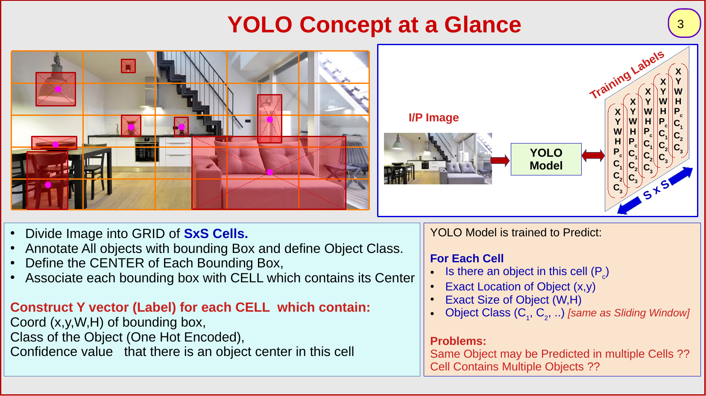
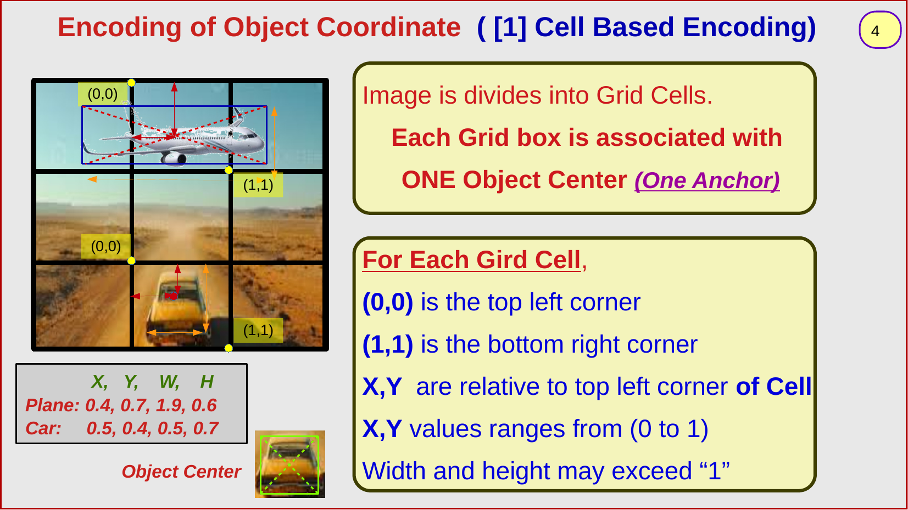
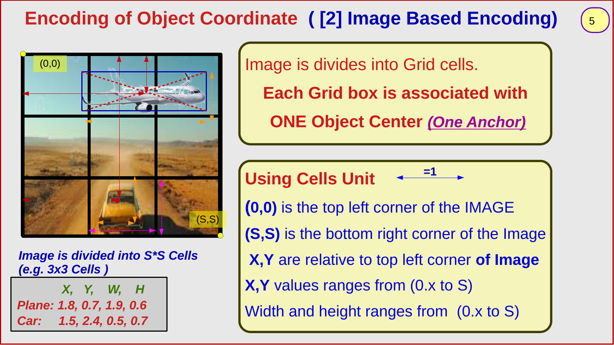
Anchors — multiple boxes per cell
Why it matters: $\mathbb{1}^{obj}_{ij}$ in the loss has a $j$ index because each cell has $B$ anchor boxes. Without anchors the index would just be $i$.
Each cell can host up to $B$ anchor boxes of different shapes/aspect ratios. An object is assigned to the anchor whose shape is most similar to its bounding box (highest IoU).
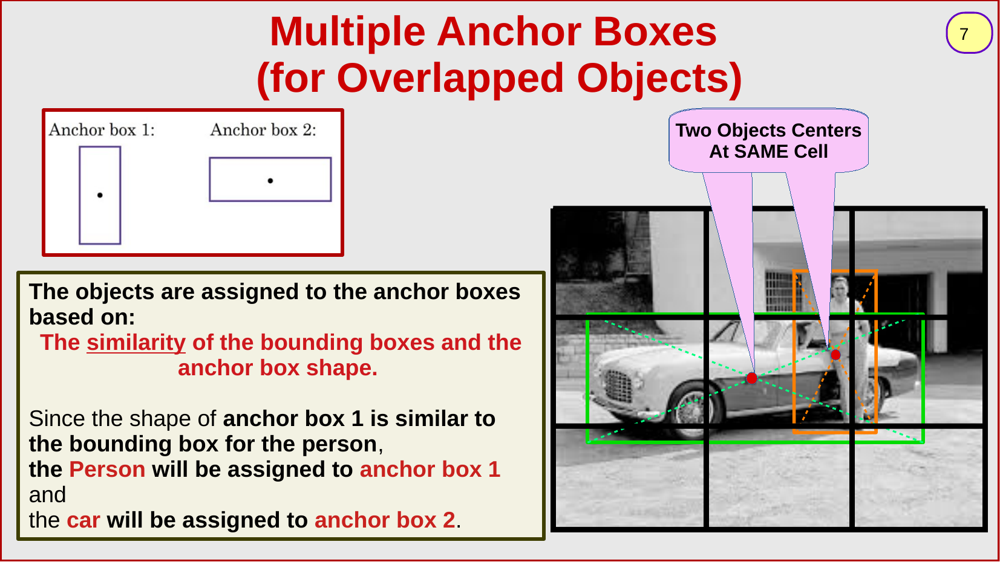
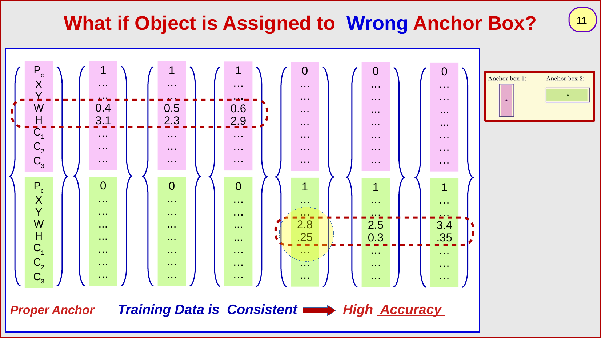
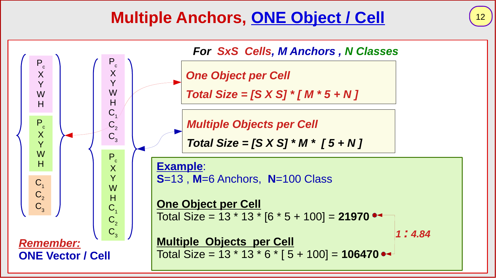
Sanity check from slide 12
For $S=13$, $M=6$ anchors, $N=100$ classes:- One object per cell: $13\!\cdot\!13\!\cdot\![6\!\cdot\!5+100]=21{,}970$ outputs.
- Multiple objects per cell: $13\!\cdot\!13\!\cdot\!6\!\cdot\![5+100]=106{,}470$ outputs (≈4.84× larger).
The YOLO output tensor (v2 / v3)
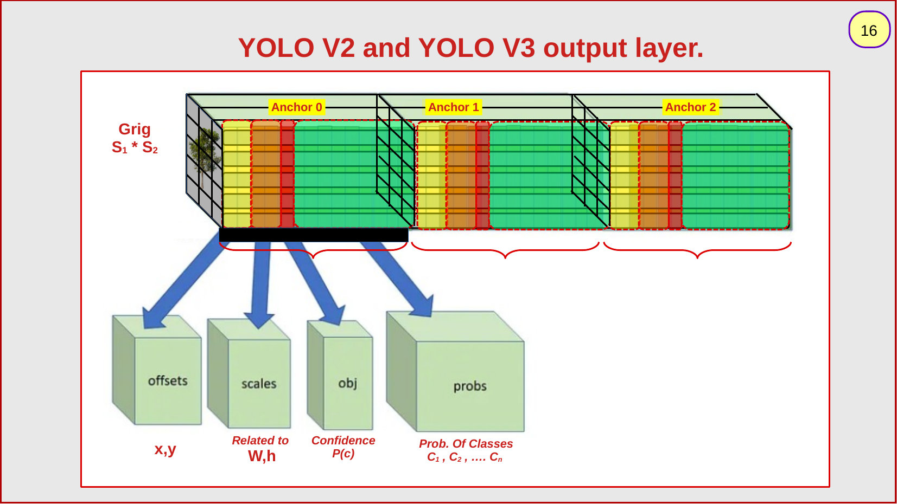
Four logical groups per anchor: offsets (box centre), scales (width/height), obj (confidence), probs (class scores). The loss function has one term per group.
s8.1 — Overall structure of the YOLO loss (5 terms)
Three sub-losses, five formula terms
Why it matters: in an exam, "list the components of the YOLO loss" or "what does $\mathbb{1}^{obj}_{ij}$ mean" is almost free marks if you know the structure.
The YOLO loss is a weighted sum of three sub-losses:
$$\text{Loss} = \underbrace{\text{Localisation}}_{\text{box }(x,y,w,h)} + \underbrace{\text{Objectness}}_{\text{confidence }C} + \underbrace{\text{Classification}}_{\text{class probs }p(c)}$$
When written as one formula it splits into five summation terms:
- Box centre — $(x,y)$ squared error (with weight $\lambda_{coord}$).
- Box size — $(\sqrt{w},\sqrt{h})$ squared error (also with $\lambda_{coord}$).
- Object-confidence — $(C-\hat C)^2$ over cells that contain an object.
- No-object confidence — $(C-\hat C)^2$ over cells that do not (with weight $\lambda_{noobj}$).
- Class probabilities — $\sum_c (p_i(c)-\hat p_i(c))^2$, only over cells that contain an object.
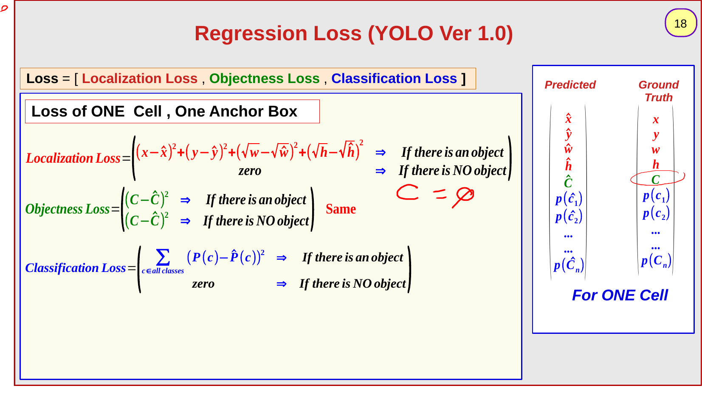
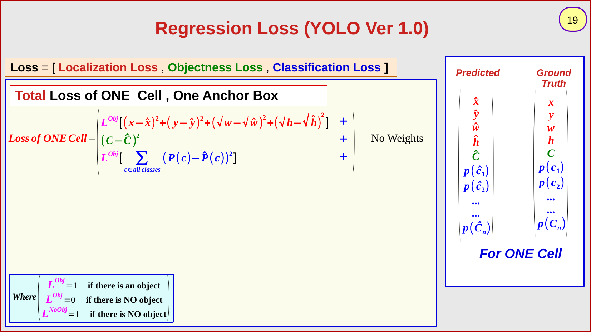
The $\mathbb{1}^{obj}_{ij}$ indicators (the gatekeepers)
Why it matters: every term in the loss has one of these out the front; they are what makes the loss "responsibility-aware".
These are 0/1 switches that turn each term on or off depending on whether the corresponding cell/anchor is responsible for an object. In the slides they are written as $L^{Obj}_{ij}$ and $L^{NoObj}_{ij}$:
- $\mathbb{1}^{obj}_{ij}=1$ if anchor $j$ of cell $i$ is responsible for a ground-truth object (the cell contains that object's centre AND anchor $j$ has the highest IoU with it). Otherwise $0$.
- $\mathbb{1}^{noobj}_{ij}=1$ if anchor $j$ of cell $i$ is not responsible for any object. Otherwise $0$.
- $\mathbb{1}^{obj}_{i}$ (no $j$) = 1 if cell $i$ contains any object's centre — used only in the class-probability term, which is shared across anchors of the same cell.
Mnemonic
Localisation and Classification are only computed where an object exists (gated by $\mathbb{1}^{obj}$). Objectness is computed everywhere but split: one piece for "is object", another for "no object" with a small weight.
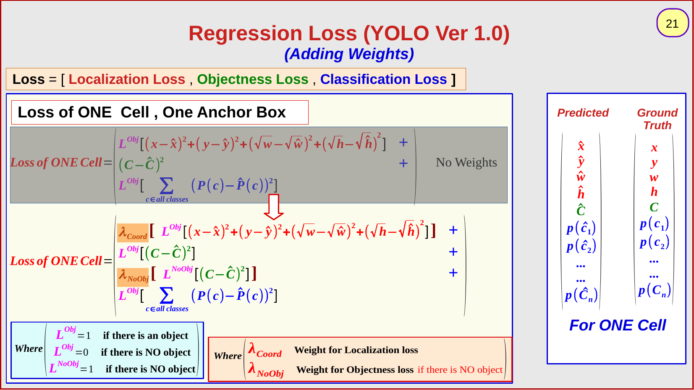
Common exam traps
- "The class loss runs over every anchor." — False. It is gated by $\mathbb{1}^{obj}_{i}$ (only cells with an object); in YOLO v1 the class probability is shared by all anchors of a cell.
- Forgetting that there are two objectness terms (object-cells and no-object-cells), not one.
- Mixing up $\mathbb{1}^{obj}_{ij}$ (per anchor) with $\mathbb{1}^{obj}_{i}$ (per cell).
s8.2 — The three sub-losses in detail
The full YOLO v1 loss — canonical form
Why it matters: this is the single most important formula in this lecture. It is also the form most likely to appear on the final.
Term 1 — box centre $(x,y)$:
$$L_1 = \lambda_{coord}\sum_{i=0}^{S^2}\sum_{j=0}^{B}\mathbb{1}^{obj}_{ij}\Big[(x_i-\hat x_i)^2+(y_i-\hat y_i)^2\Big]$$
Term 2 — box size $(w,h)$ with $\sqrt{\cdot}$ trick:
$$L_2 = \lambda_{coord}\sum_{i=0}^{S^2}\sum_{j=0}^{B}\mathbb{1}^{obj}_{ij}\Big[(\sqrt{w_i}-\sqrt{\hat w_i})^2+(\sqrt{h_i}-\sqrt{\hat h_i})^2\Big]$$
Term 3 — object confidence:
$$L_3 = \sum_{i=0}^{S^2}\sum_{j=0}^{B}\mathbb{1}^{obj}_{ij}\,(C_i-\hat C_i)^2$$
Term 4 — no-object confidence (down-weighted):
$$L_4 = \lambda_{noobj}\sum_{i=0}^{S^2}\sum_{j=0}^{B}\mathbb{1}^{noobj}_{ij}\,(C_i-\hat C_i)^2$$
Term 5 — class probabilities (per cell, only if cell has an object):
$$L_5 = \sum_{i=0}^{S^2}\mathbb{1}^{obj}_{i}\sum_{c\in\text{classes}}(p_i(c)-\hat p_i(c))^2$$
Total: $\;L_{YOLOv1} = L_1+L_2+L_3+L_4+L_5$.
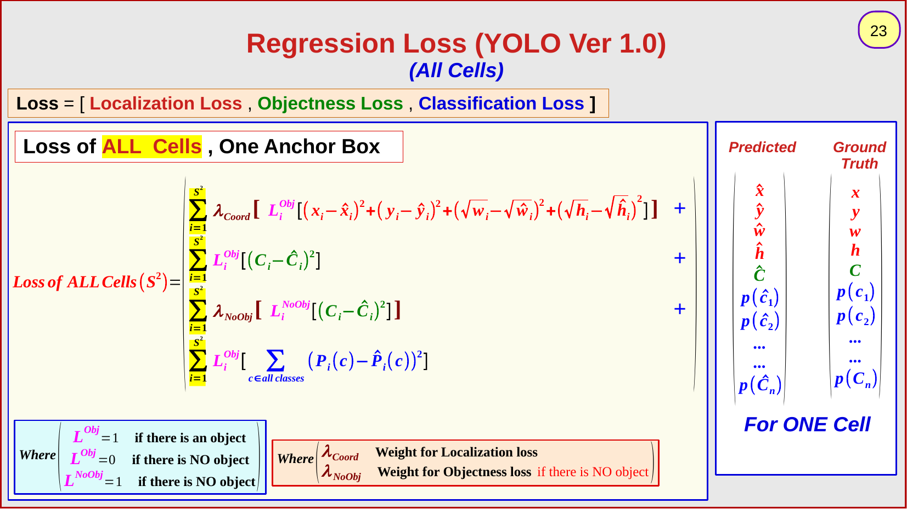
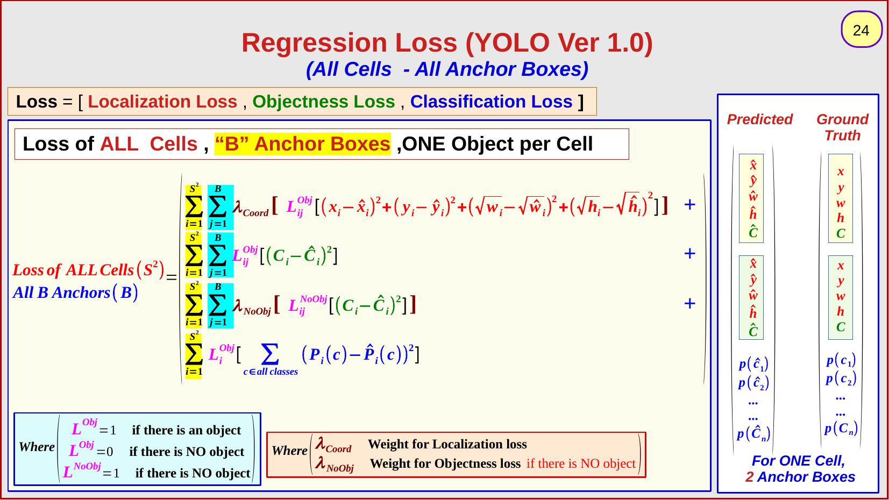
Named symbols
- $S^2$ — number of grid cells (e.g. $7\times 7=49$ in YOLO v1).
- $B$ — anchor boxes per cell (2 in v1, 5 in v2, 9 in v3).
- $x_i,y_i,w_i,h_i$ — ground-truth box centre & size for the object in cell $i$.
- $\hat x_i,\hat y_i,\hat w_i,\hat h_i$ — predicted box centre & size.
- $C_i$ — ground-truth confidence (1 if obj present, otherwise 0 — or in some refs, the IoU between predicted & ground-truth box).
- $\hat C_i$ — predicted confidence in $[0,1]$.
- $p_i(c)$ — ground-truth class probability (one-hot: 1 for the right class, 0 otherwise).
- $\hat p_i(c)$ — predicted class probability.
- $\mathbb{1}^{obj}_{ij}$ — 1 if anchor $j$ of cell $i$ is responsible for the object, 0 otherwise.
- $\mathbb{1}^{noobj}_{ij}$ — 1 if anchor $j$ of cell $i$ is NOT responsible for any object.
- $\lambda_{coord}$ — weight for the localisation terms. Typical value 5.
- $\lambda_{noobj}$ — weight for the no-object confidence term. Typical value 0.5.
(1) Localisation loss — $(x,y)$ + $(\sqrt{w},\sqrt{h})$
This is the biggest of the three sub-losses (it is a 4-D regression). It dominates training, hence the $\lambda_{coord}$ weight.
$$L_{loc} = \lambda_{coord}\sum_{i=0}^{S^2}\sum_{j=0}^{B}\mathbb{1}^{obj}_{ij}\Big[(x_i-\hat x_i)^2+(y_i-\hat y_i)^2+(\sqrt{w_i}-\sqrt{\hat w_i})^2+(\sqrt{h_i}-\sqrt{\hat h_i})^2\Big]$$
Why $\sqrt{w},\sqrt{h}$ instead of $w,h$?
Without the square root, a 5-pixel error on a tiny box and a 5-pixel error on a huge box contribute the same amount to the loss — but the tiny-box error is visually catastrophic (you missed half the object) while the huge-box error is invisible. The square-root mapping expands small numbers (anything in $[0,0.25]$ maps to $[0,0.5]$) so the gradient is much steeper for small boxes.
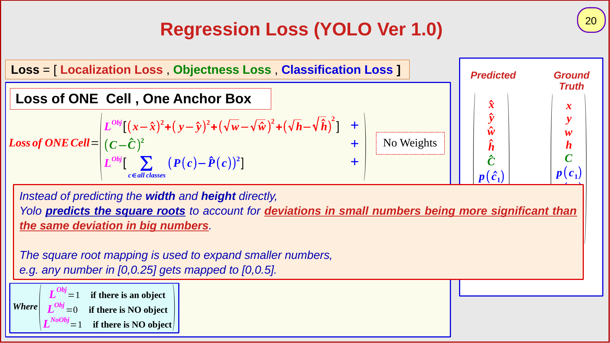
Worked example — same 5-px error, two box sizes
Small box: width 20 px, predicted 15 px.
- Without $\sqrt{\;}$: $(20-15)^2 = 25$
- With $\sqrt{\;}$: $(\sqrt{20}-\sqrt{15})^2 = (4.47-3.87)^2 \approx (0.60)^2 \approx 0.36$
Large box: width 500 px, predicted 495 px.
- Without $\sqrt{\;}$: $(500-495)^2 = 25$ (identical to small box!)
- With $\sqrt{\;}$: $(\sqrt{500}-\sqrt{495})^2 = (22.36-22.25)^2 \approx (0.11)^2 \approx 0.013$
Ratio of losses with $\sqrt{\;}$: $0.36 / 0.013 \approx 28\times$ larger for the small-box error. That's exactly the behaviour we want.
Answer
$\mathbb{1}^{obj}_{ij}=0$ there — there is no ground-truth box to regress against, so the term vanishes.(2) Objectness (confidence) loss — split into obj / no-obj
Most cells in an image contain no object. If we treated them all equally, the "no object" gradient would dominate and the model would collapse to predicting $\hat C=0$ everywhere.
$$L_{obj} = \sum_{i=0}^{S^2}\sum_{j=0}^{B}\mathbb{1}^{obj}_{ij}(C_i-\hat C_i)^2 \;+\; \lambda_{noobj}\sum_{i=0}^{S^2}\sum_{j=0}^{B}\mathbb{1}^{noobj}_{ij}(C_i-\hat C_i)^2$$
Both halves use exactly the same per-cell formula $(C_i-\hat C_i)^2$ — the difference is the indicator (obj vs noobj) and the weight ($1$ vs $\lambda_{noobj}=0.5$).
The ground-truth confidence $C_i$ in YOLO v1 is taken to be the IoU between the predicted box and the ground-truth box (for the responsible anchor), or simply 0 for "no object" cells. The predicted $\hat C_i$ is the network's sigmoid output for that anchor's objectness channel.
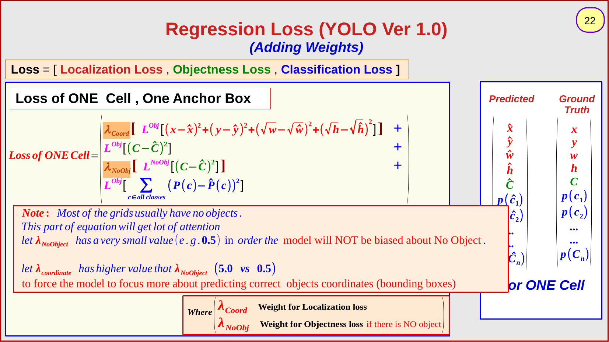
Why the asymmetric weights 5 and 0.5?
Imagine a $7\times 7$ grid → 49 cells. A typical image has maybe 1–3 objects, so ~46 cells have no object. If all 49 confidence errors had equal weight, the model could minimise the loss by pushing every $\hat C\!\to\!0$ — that drops 46 large gradients to zero but loses the 3 important ones. Setting $\lambda_{noobj}=0.5$ shrinks the "no object" gradient; setting $\lambda_{coord}=5$ amplifies the box-regression gradient. Together, the model is forced to pay attention to where the few real objects actually are.
(3) Classification loss — per cell, only when an object exists
Class probabilities only make sense for cells that actually contain an object — otherwise "what class is the empty patch?" is meaningless.
$$L_{cls} = \sum_{i=0}^{S^2}\mathbb{1}^{obj}_{i}\sum_{c\in\text{classes}}(p_i(c)-\hat p_i(c))^2$$
Note: the sum is over $i$ only (no $j$). In YOLO v1, all $B$ anchor boxes of a cell share one class-probability vector — the network commits to one class per cell. (v2+ predicts class per anchor.)
Worked example — 3-class cell with one car
Classes = {pedestrian, car, motorcycle}. Ground truth $p = [0,1,0]$. Predicted $\hat p = [0.1, 0.7, 0.2]$.Loss $= (0-0.1)^2 + (1-0.7)^2 + (0-0.2)^2 = 0.01 + 0.09 + 0.04 = 0.14$.
Trap
- Classification loss in YOLO v1 is SSE (sum-of-squared-errors), not softmax cross-entropy. This is unusual and unique to YOLO v1; v2/v3 switches to cross-entropy.
Putting it all together — the full sum
You should be able to derive this from the three sub-losses on a blank page in less than 2 minutes. Practice it.
s8.3 — YOLO versions evolution (what changed in the loss)
The timeline (until March 2026)
Most "what's new in YOLOvX?" questions reduce to which loss function they adopted. Every release shipped a different objective.
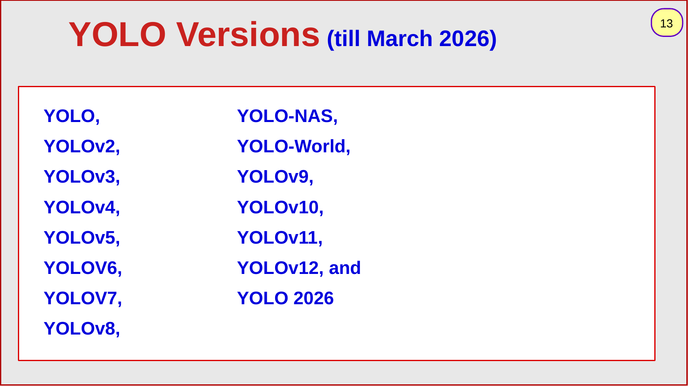
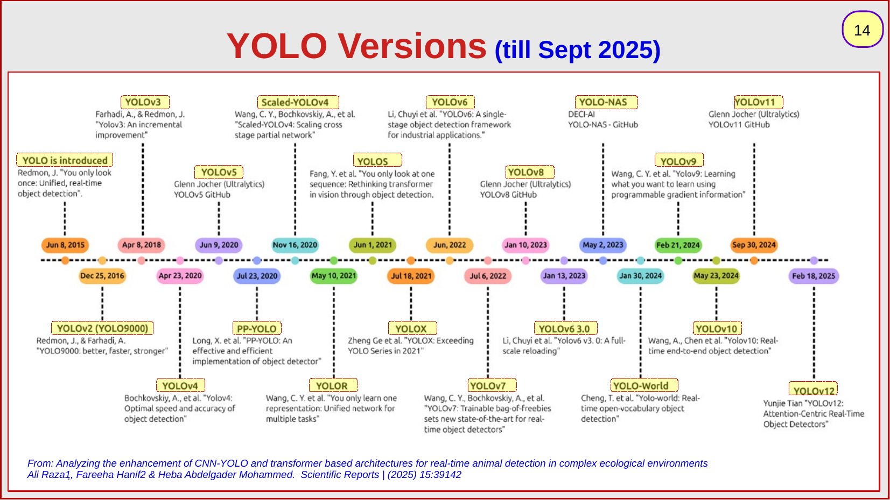
YOLOv1 (Jun 2015) — "You only look once"
- Loss type: Sum-of-squared error (SSE) for all 5 terms.
- $S=7$, $B=2$ anchors per cell, 20 classes (PASCAL VOC).
- $\lambda_{coord}=5$, $\lambda_{noobj}=0.5$.
- $\sqrt{w},\sqrt{h}$ trick for size loss.
- Class probability is shared across the anchors of a cell.
Key improvements: simple implementation, fast.
Weaknesses: poor IoU handling, struggles with small / clustered objects, only 98 boxes per image.
YOLOv2 / YOLO9000 (Dec 2016) — "Better, faster, stronger"
- Removes the fully-connected head; goes fully convolutional.
- Anchors learned by k-means clustering on the training-set ground-truth box shapes — instead of hand-picking aspect ratios. Typically 5 anchors.
- Direct location prediction: applies $\sigma$ on the predicted centre offsets so $(x,y)$ stays inside the cell ($\in[0,1]$).
- Multi-scale training (the network randomly resizes the input every few iterations: 320, 352, …, 608).
- Higher input resolution (416×416 → $S=13$).
- Objectness loss switches from SSE to (binary) cross-entropy — see slide 26.
- Class prediction is per anchor, not per cell — different objects in the same cell get different classes.
- YOLO9000 = trained jointly on detection (COCO) + classification (ImageNet) to scale to 9000 classes.
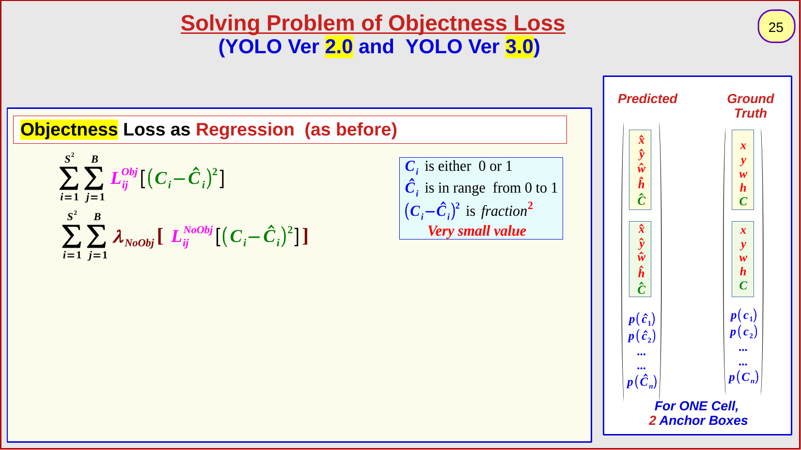
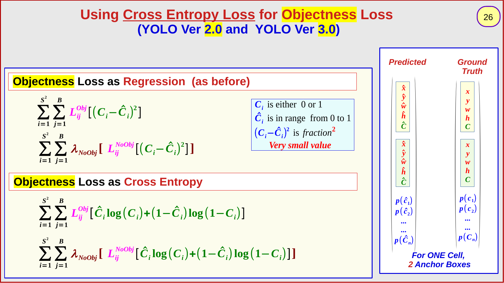
YOLOv3 (Apr 2018) — "An incremental improvement"
- Multi-scale predictions: 3 output heads at 3 different feature-map scales (small/medium/large) — like a feature pyramid (FPN). Each scale predicts 3 anchors → 9 anchors total.
- Deeper backbone: Darknet-53 (residual blocks).
- Classification loss switches from softmax to independent logistic / sigmoid + binary cross-entropy per class — supports multi-label classes (e.g. "Woman" + "Person").
- Objectness still binary cross-entropy.
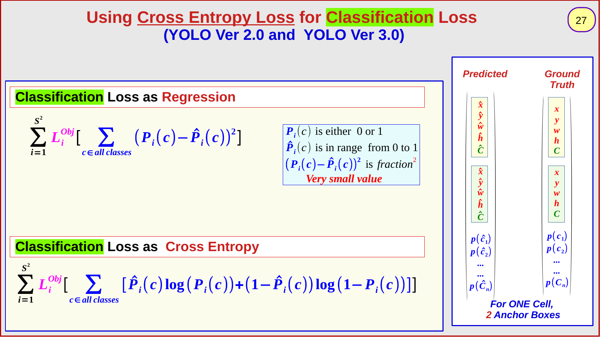
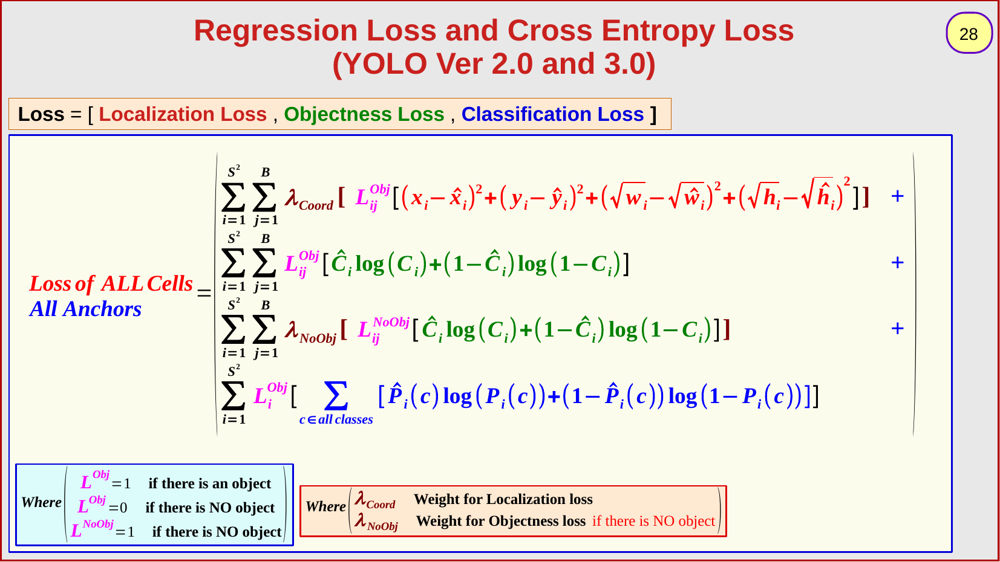
YOLOv4 (Apr 2020) — "Optimal speed and accuracy"
This is the version where the field stopped using $(x,y,w,h)$ regression for localisation and moved to IoU-based losses, because regression has a known flaw:
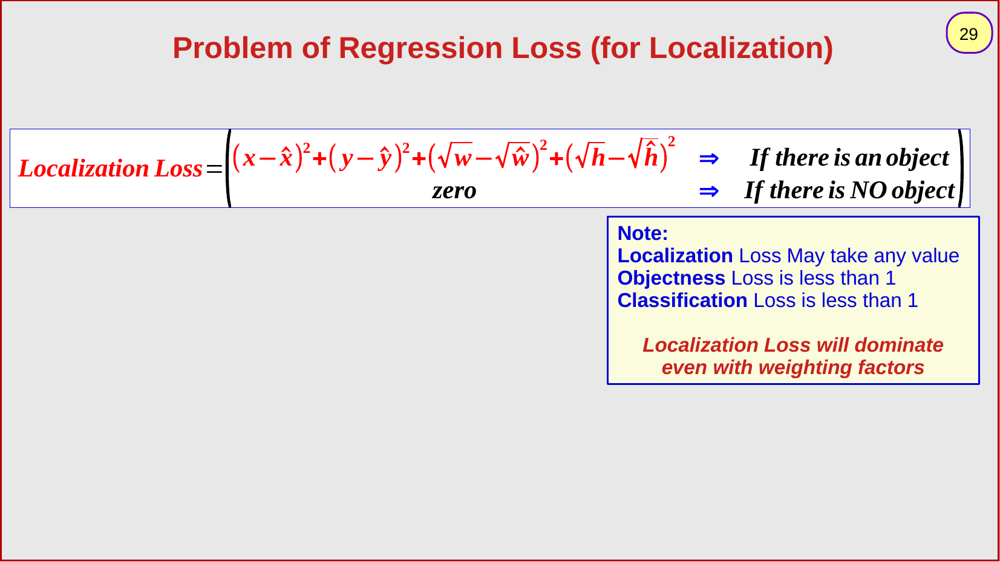
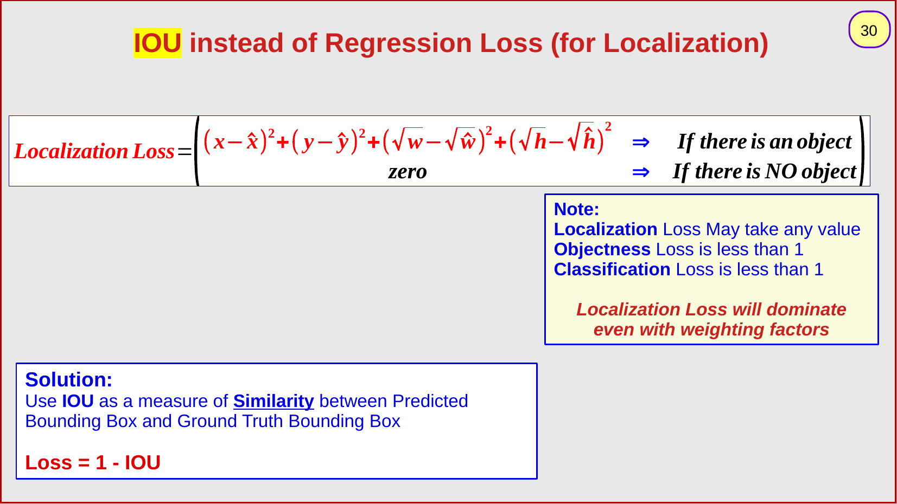
YOLOv4 uses CIoU loss for box regression and binary cross-entropy (BCE) for objectness and classification. CIoU combines three penalties:
$$\text{Loss}_{CIoU} = 1 - \text{IoU} + \frac{d^2}{C^2} + \alpha\nu$$
where:
- $d$ = Euclidean distance between predicted & ground-truth box centres,
- $C$ = diagonal length of the smallest enclosing box,
- $\nu = \dfrac{4}{\pi^2}\left(\arctan\dfrac{w^{gt}}{h^{gt}} - \arctan\dfrac{w}{h}\right)^2$ — aspect-ratio mismatch (orientation),
- $\alpha = \dfrac{\nu}{(1-\text{IoU})+\nu}$ — balancing factor.
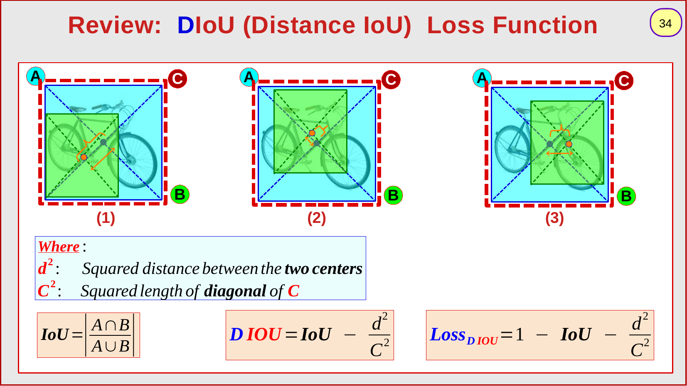
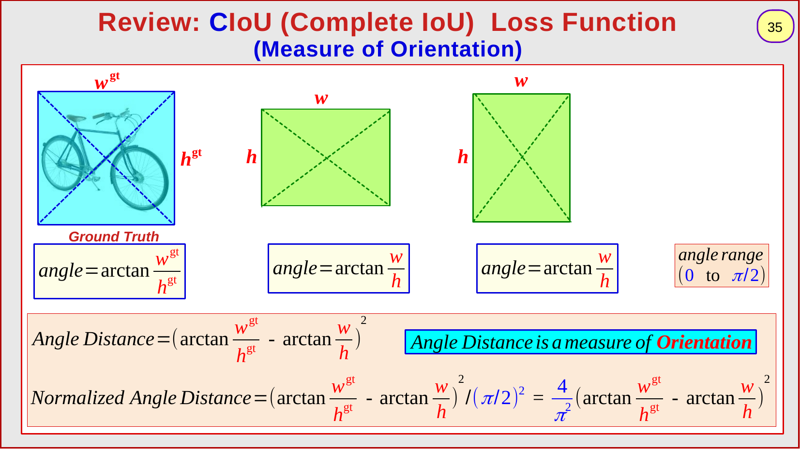
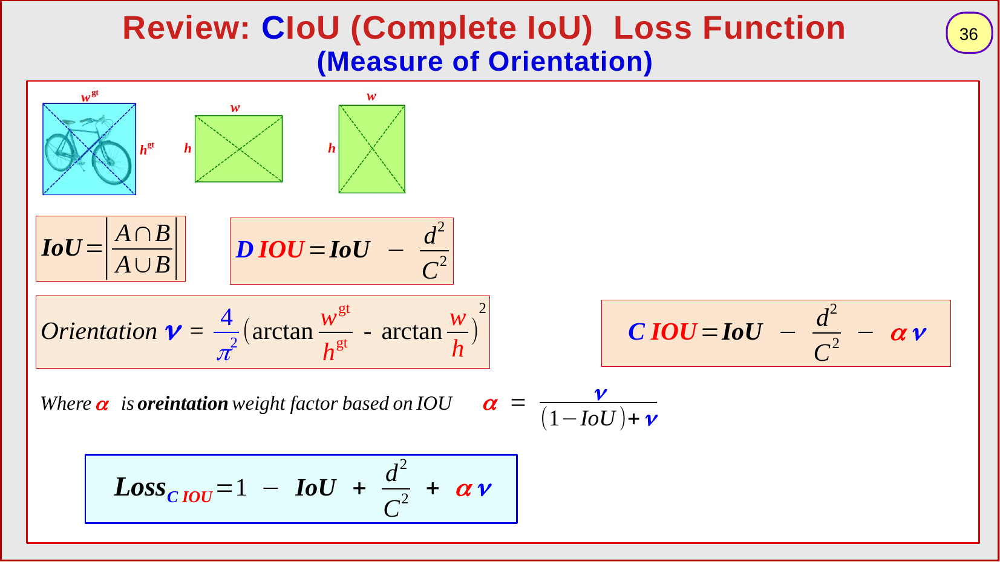
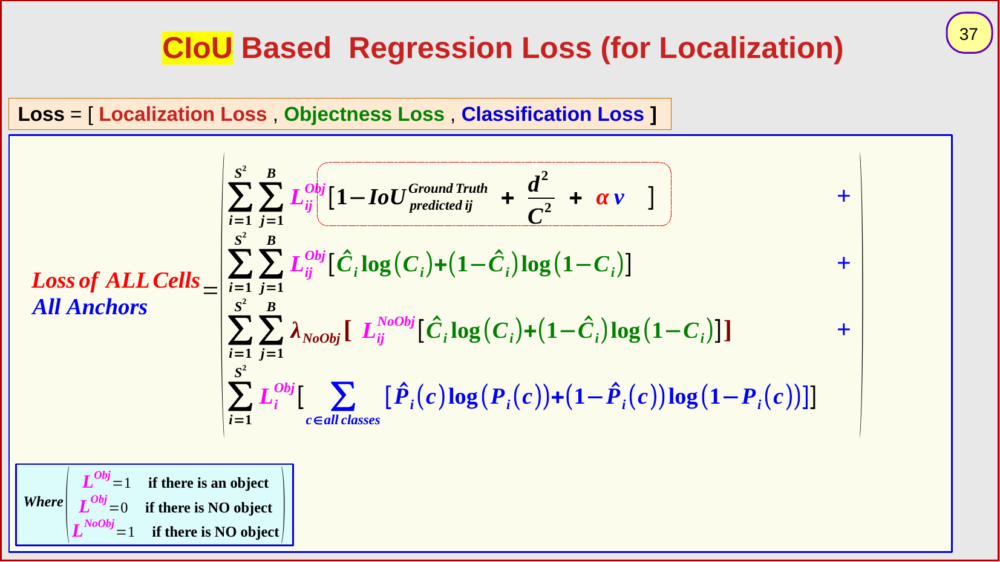
The IoU-variant zoo (slide 32)
- Basic IoU — $|A\cap B|/|A\cup B|$. Zero gradient when boxes don't overlap.
- GIoU (Generalised) — adds a penalty for the "empty" area inside the enclosing box.
- DIoU (Distance) — adds $d^2/C^2$ centre-distance penalty.
- CIoU (Complete) — DIoU + aspect-ratio term $\alpha\nu$. Used by YOLOv4/v5/YOLOR/v7.
- EIoU (Efficient) — splits the aspect-ratio penalty into separate $w$ and $h$ terms.
- Focal-EIoU — adds a focal weighting on top of EIoU to emphasise hard examples.
- SIoU (SCYLLA) — adds an angle/shape cost (used by YOLOv6).
- WIoU (Wise) — adaptive weighting based on outlier quality.
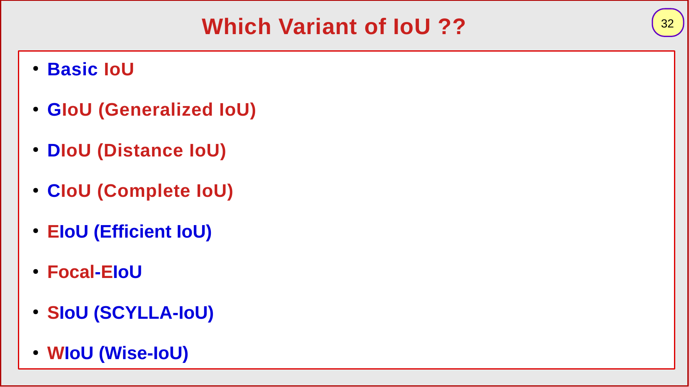
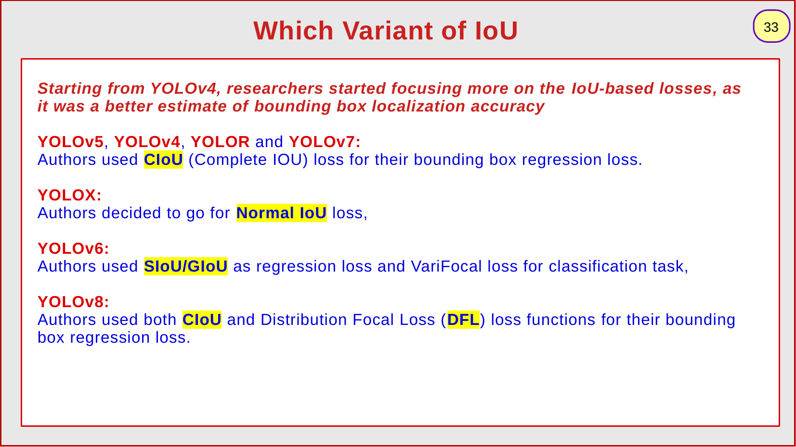
YOLOv5 (Jun 2020, Ultralytics) — "Auto-anchors + Focal Loss"
- PyTorch re-implementation (not Darknet); huge engineering quality jump (export, training tools, mosaic augmentation, …).
- Auto-anchor learning: k-means + genetic algorithm refines anchors on your dataset at training start.
- Localisation loss: CIoU.
- Classification + objectness loss: BCE, optionally with a Focal Loss wrapper $\alpha_t(1-p_t)^\gamma\log(p_t)$ to focus on hard examples / handle class imbalance.
YOLOv6 (Jun 2022, Meituan) — industrial single-stage
- Localisation: SIoU (or GIoU) — angle cost + shape cost + IoU.
- Classification: VariFocal Loss.
- Decoupled detection head (separate branches for classification vs box regression).
- v6 3.0 (Jan 2023) — full-scale reload with better backbone.
YOLOv7 (Jul 2022) — "Trainable bag of freebies"
- Localisation: CIoU (same family as v5/v4).
- Adds many "free" tricks: auxiliary heads with re-parameterised convolutions, planned re-param, coarse-to-fine label assignment, etc.
- YOLOR (May 2021) is its predecessor — "you only learn one representation".
YOLOv8 (Jan 2023, Ultralytics) — anchor-free
- Anchor-free head: predicts box distances from each grid point to the 4 sides, no pre-defined anchors.
- Localisation: CIoU + Distribution Focal Loss (DFL) — DFL models each side distance as a discrete distribution, $\mathcal{L}_{DFL} = -\sum_i p_i^*\log(p_i)$.
- Task-aligned assigner for matching predictions to ground truth.
YOLOv9, v10, v11, v12 + YOLO-NAS / YOLO-World
- YOLO-NAS (May 2023, Deci) — architecture discovered by Neural Architecture Search; quant-friendly.
- YOLO-World (Jan 2024) — open-vocabulary object detection; text-image alignment (CLIP-style).
- YOLOv9 (Feb 2024) — Programmable Gradient Information (PGI) + GELAN backbone; VLR loss (vector projection with boundary constraints); learned object ordering; eliminates NMS.
- YOLOv10 (May 2024) — end-to-end (no NMS), probabilistic loss (joint classification-regression likelihood), Transformer integration; fewer false positives.
- YOLOv11 (Sep 2024, Ultralytics) — GELAN-style loss, hybrid geometric + attention-guided IoU, SAM integration, soft edge handling.
- YOLOv12 (Feb 2025) — attention-centric real-time detector; Unified Ranking Loss, directional attention box matching, occlusion robustness, foundation-model fusion.
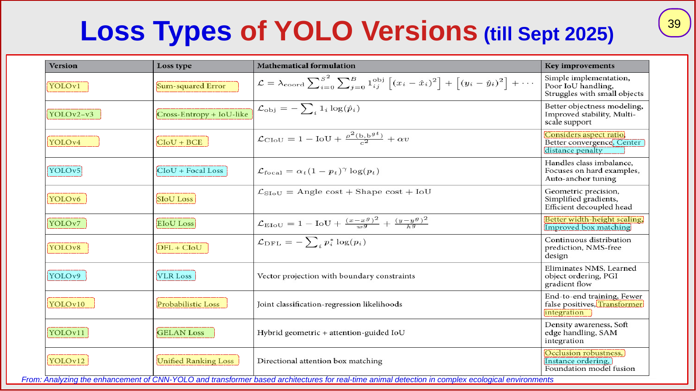
Big picture
From the slides: "Most enhancements of YOLO versions are in the loss function." The backbone and head evolve too, but the loss function is where each version really differentiates itself.
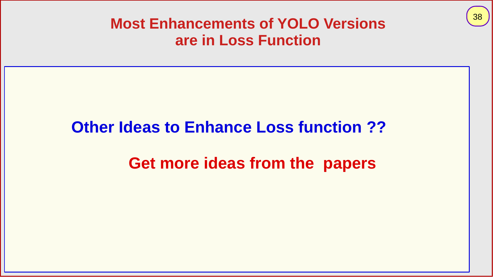
Common exam traps
- "YOLOv1 used cross-entropy for classification." — False. YOLOv1 used SSE everywhere. Cross-entropy came in with v2.
- "YOLOv3 uses softmax." — False. v3 uses per-class sigmoid + BCE for multi-label support.
- "CIoU = IoU − $d^2/C^2$." — That's DIoU. CIoU adds an aspect-ratio term $\alpha\nu$.
- "YOLOv8 still uses anchors." — False. v8 is anchor-free.
- "Anchor sizes are hand-designed in YOLOv2." — False. v2 learns them by k-means clustering on the dataset's GT boxes.
Practice quiz — Lecture 8
Answer
$$L_{loc}=\lambda_{coord}\sum_{i=0}^{S^2}\sum_{j=0}^{B}\mathbb{1}^{obj}_{ij}\Big[(x_i-\hat x_i)^2+(y_i-\hat y_i)^2+(\sqrt{w_i}-\sqrt{\hat w_i})^2+(\sqrt{h_i}-\sqrt{\hat h_i})^2\Big]$$Answer
$\lambda_{noobj}$ down-weights the confidence loss over the (very many) cells that contain no object. Without it, the gradient from background cells would overwhelm the gradient from the few object cells and the model would collapse to predicting $\hat C=0$ everywhere.b) To penalise the same absolute error more for small boxes than for large boxes.
c) To bound the loss in $[0,1]$.
d) To remove the need for anchors.
Answer
b. The square-root mapping expands small values and compresses large values, so an identical $|w-\hat w|$ contributes more to the loss when $w$ is small.Answer
False. Only for the one anchor that is actually responsible for the object (the anchor with highest IoU with the ground truth). The other anchors in the same cell have $\mathbb{1}^{obj}_{ij}=0$ and $\mathbb{1}^{noobj}_{ij}=1$.Answer
$(\sqrt{16}-\sqrt{9})^2 = (4-3)^2 = 1$. (Without $\sqrt{\;}$ it would be $(16-9)^2=49$.)Answer
Binary cross-entropy: $\hat C\log(C)+(1-\hat C)\log(1-C)$. The original SSE gives a very small gradient because $C,\hat C\in[0,1]$ → $(C-\hat C)^2$ is "fraction²" — slow to learn. Cross-entropy provides a strong gradient near 0 and 1.Answer
- YOLOv1 → SSE on $(x,y,\sqrt w,\sqrt h)$
- YOLOv4 → CIoU
- YOLOv6 → SIoU (or GIoU)
- YOLOv7 → CIoU
- YOLOv8 → CIoU + DFL